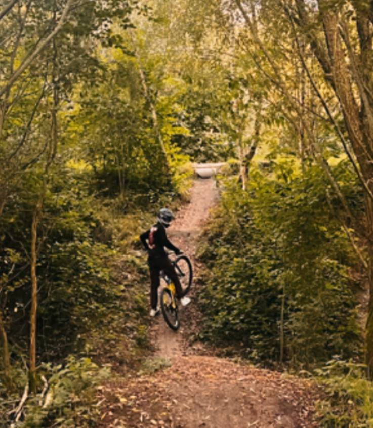
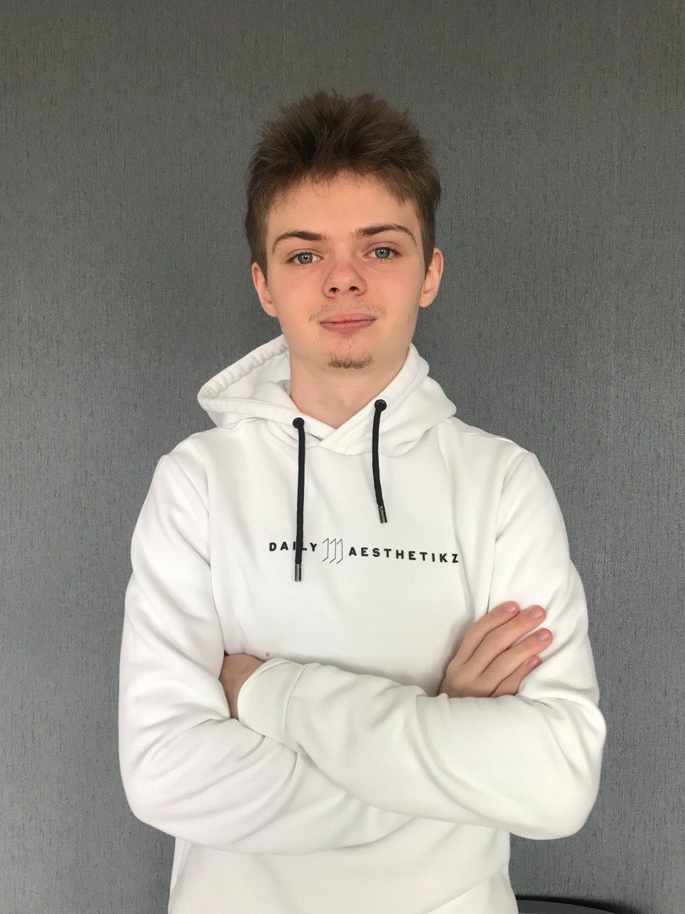

IDK
-
Home
Over school
Thema`s
Contact`s
00
:
00
:
00
Yurii Fursa
Ik ben Yurii Fursa , 19 jaar oud. Ik ben een student van Techniek College Rotterdam Ik houd van DownHill en wil Front-End Developer worden.


Danila Milovanov
Mijn naam is Danila (19 jaar oud), momenteel ben ik student van Techniek College Rotterdam.Mijn hobby`s zijn het muziek en programmeren.Ik heb 29 vrienden in mijn hoofd.